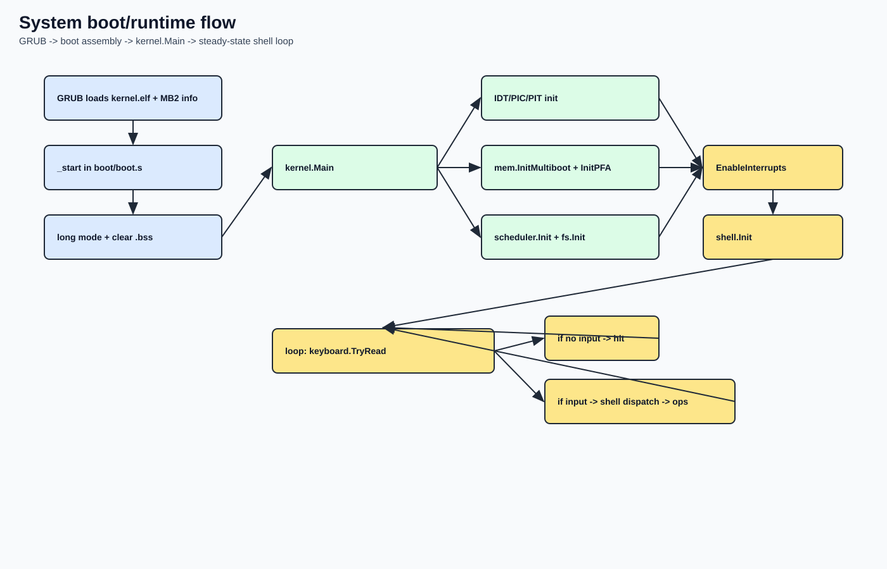
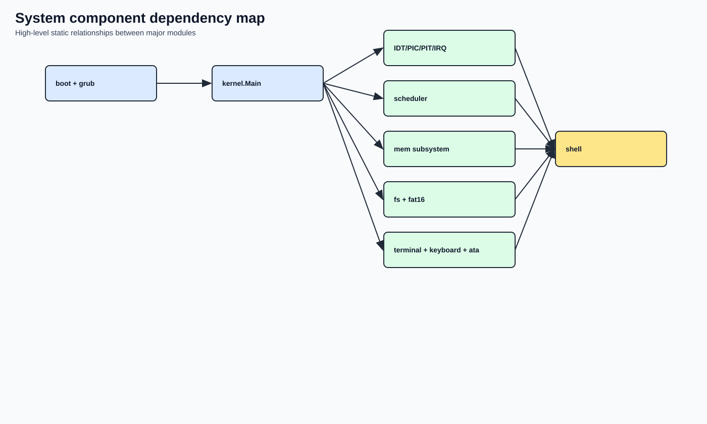
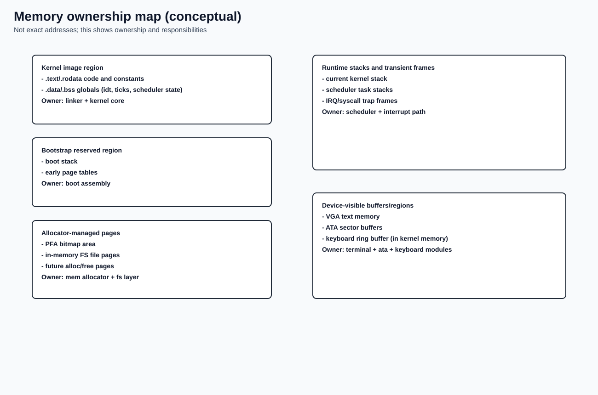

System Architecture
Why this page matters
This page is the high-level map of the whole project. Before diving into single subsystems, use this chapter to understand:
- which component owns what
- how control moves from boot to runtime
- how data flows between kernel core, I/O, memory, and storage
Scope and architecture style
go-dav-os is a monolithic educational kernel with small, explicit modules.
Architecture characteristics:
- single address space
- single-core execution model
- low-level x86_64 boot path in assembly
- kernel logic in Go (
gccgo, freestanding) - static/simple data structures over dynamic complexity
Source anchors (quick references)
- Boot handoff to kernel:
boot/boot.s+kernel/kernel.go:27tokernel/kernel.go:64 - Interrupt/scheduling core:
kernel/idt.go,kernel/irq.go,kernel/scheduler/scheduler.go - Memory discovery and allocation:
mem/multiboot.go,mem/allocator.go - I/O path:
terminal/terminal.go,keyboard/irq.go,drivers/ata/ata.go - Filesystem layer:
fs/fs.go,fs/fat16/fat16.go - Command interface:
shell/shell.go
Architectural layers
- Boot and CPU mode transition
- GRUB loads ELF and passes Multiboot2 info.
-
Boot assembly builds minimal paging and enters long mode.
-
Kernel core control plane
- Main init sequence (
kernel.Main). - IDT/PIC/PIT setup.
- IRQ dispatch and syscall dispatch.
-
Scheduler context switch policy.
-
Resource services
- Physical memory map + page allocator.
-
In-memory filesystem and persistent FAT16.
-
Device and interaction edge
- VGA terminal output.
- Keyboard input via IRQ.
- ATA PIO block device I/O.
- Shell command loop as operator interface.
End-to-end boot/runtime flow (Mermaid)
flowchart TD
A[GRUB loads kernel.elf + MB2 info] --> B[_start in boot/boot.s]
B --> C[Enable long mode + clear bss]
C --> D[kernel.Main]
D --> E[IDT/PIC/PIT init]
D --> F[mem.InitMultiboot + InitPFA]
D --> G[scheduler.Init + fs.Init]
E --> H[EnableInterrupts]
F --> H
G --> H
H --> I[shell.Init]
I --> J[main loop: keyboard.TryRead]
J --> K{input available?}
K -->|No| L[hlt idle]
L --> J
K -->|Yes| M[shell command dispatch]
M --> N[mem/fs/disk/task operations]
N --> J
Rendered image:

Component dependency map (Mermaid)
flowchart LR
BOOT[boot + grub] --> KERNEL[kernel.Main]
KERNEL --> INTR[IDT/PIC/PIT/IRQ]
KERNEL --> SCHED[scheduler]
KERNEL --> MEM[mem subsystem]
KERNEL --> FS[fs + fat16]
KERNEL --> IO[terminal + keyboard + ata]
KERNEL --> SH[shell]
INTR --> SCHED
INTR --> IO
MEM --> FS
IO --> SH
FS --> SH
SCHED --> SH
Rendered image:

Memory ownership map (conceptual)
This is not an exact address map; it is an ownership map of major runtime regions.
flowchart TB
A[Kernel image region]
A --> A1[text + rodata]
A --> A2[data + bss globals]
B[Bootstrap reserved region]
B --> B1[boot stack]
B --> B2[early page tables]
C[Allocator managed pages]
C --> C1[PFA bitmap area]
C --> C2[in-memory FS pages]
C --> C3[future alloc pages]
D[Runtime stacks]
D --> D1[current kernel stack]
D --> D2[scheduler task stacks]
E[Device-visible buffers]
E --> E1[VGA text memory]
E --> E2[ATA sector buffers]
Rendered image:

Data flows that matter operationally
- Input path
-
keyboard IRQ -> keyboard ring buffer -> kernel loop -> shell parser
-
Output path
-
shell/kernel prints -> terminal driver -> VGA memory (+ debug port)
-
Storage path
-
shell command -> FAT16/in-memory fs -> ATA PIO (for persistent path)
-
Scheduling path
- PIT IRQ0 -> scheduler decision -> context switch (
asm/switch.s)
Architecture constraints and tradeoffs
Current design intentionally favors clarity over feature breadth.
- Single shared page-table template with a fixed user window (no per-process address spaces yet)
- No SMP support
- Minimal syscall surface
- Legacy PIC/PIT path (didactic and simple)
- Static-size pools and arrays for predictability
This makes behavior easier to reason about while learning core OS internals.
Where to continue
Recommended next pages:
docs/manual/02-boot/boot-and-grub.mddocs/manual/02-boot/linker-and-initial-memory-layout.mddocs/manual/03-kernel-core/main-loop.md